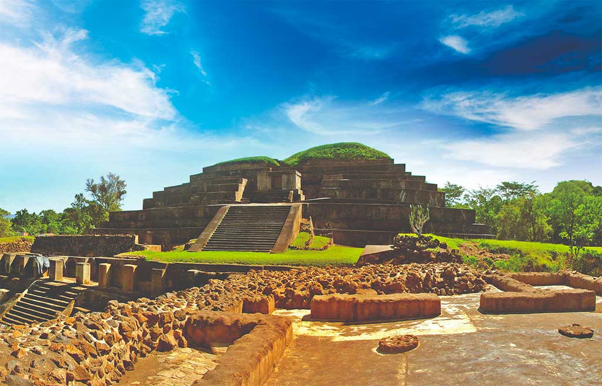

Top three activities to do at El Salvador

Surfing at El Tunco Beach
Surfing in El Tunco is an unforgettable experience with great waves and a relaxed vibe.

Hiking the Santa Ana Volcano (Ilamatepeq)
Hike to the top of Santa Ana Volcano and enjoy the stunning crater lake and panoramic views.

Exploring Mayan Ruins at Tazumal and Joya de Cerén
Explore the fascinating ancient ruins of Tazumal and the preserved Mayan village at Joya de Cerén.